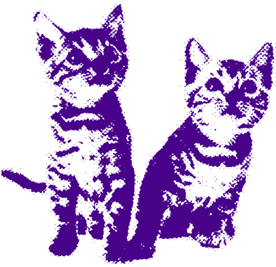

Значення
«Стенити» означає:
- дуже подобається якась група, артист або пісня;
- слідкувати за новими релізами, фан-відео, камбеками;
- активно брати участь у фан-активностях і підтримувати улюбленців.
На відміну від оригінального Стена з пісні Eminem, сучасний фанат не одержимий до крайності, а просто щиро кайфує від музики, сценічних виступів і контенту свого bias чи групи.
Це слово описує фанатське захоплення з радістю і легким мемним вайбом: ти фанат, ти слідкуєш, ти кайфуєш, і це класно.

Походження
Все почалося з пісні Eminem «Stan» (2000 рік). У ній розповідається про фаната Стена, який настільки обожнює свого кумира, що буквально живе його життям і переживає всі його успіхи та невдачі.
Згодом слово потрапило у фан-спільноти, особливо K-pop, де трохи змінило значення. У молодіжних чатах сучасних фанатів слово означає «любити і слідкувати за кимось або чимось дуже активно», але вже без нав’язливої одержимості, як у пісні Емінема. В українській мові це слово адаптували як «стен» або «стенити», і воно стало популярним серед фанатів K-pop.


Обери кого застениш сьогодні